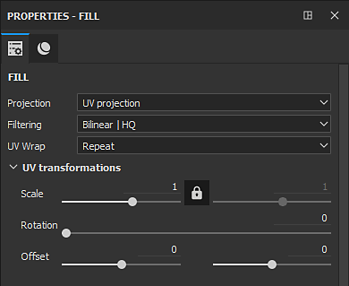
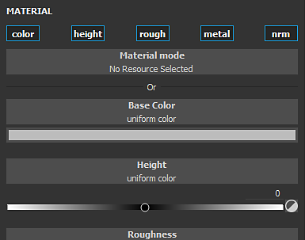

Fill layer and fill effects project a texture directly onto the mesh based on a specific mode. This type of layer/effect avoid to manually paint textures on the 3D model. The settings of the projection can be edited via the Properties window.
The properties are divided in two categories: Fill properties and Material.
The Fill properties controls how the Material is applied and/or projected onto the mesh. The projection mode can be changed via the Projection dropdown in the Properties window.
The current projection modes available are:

The Material / Grayscale controls are identical to the other tools. See the Paint tool documentation for more details.